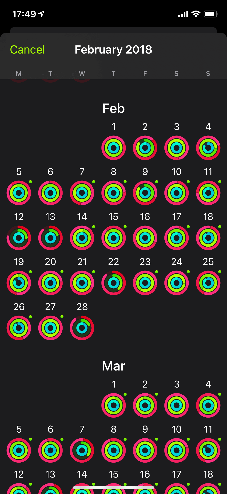
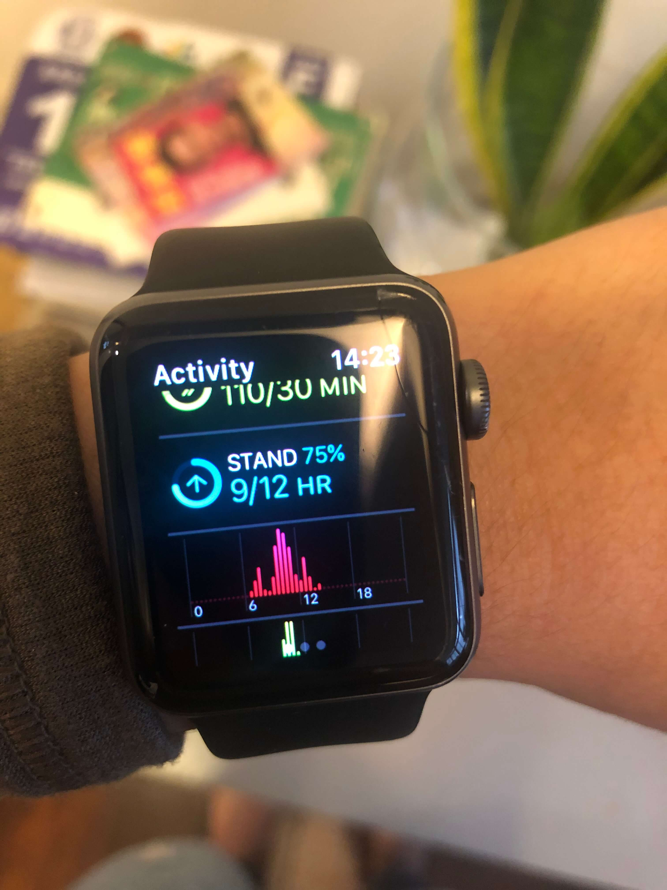
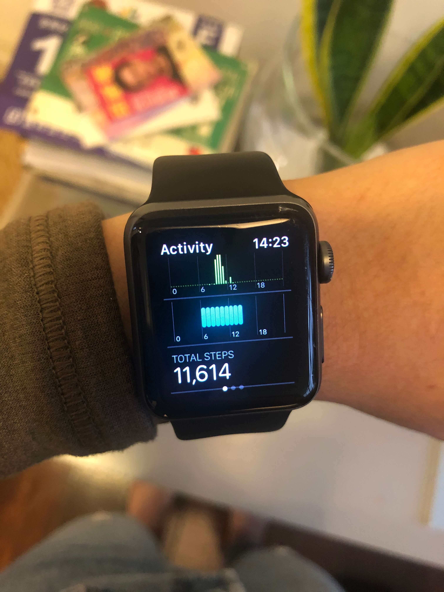

Apple Watch 慢開箱
前年衝動買的 Apple Watch Series 3，默默變成我運動的必備工具，如果出門時才發現快沒電，我會等充電再去運動
最常用的應該就是內建的 Activity，每天的活動量被視覺化成紅色活動圈、綠色運動圈跟藍綠色的站立圈，從 2018 年第一天使用到今天，我還是幾乎每天完成這三個圈圈
Stand ring 站立圈圈的介面讓我疑惑了一陣子，在手錶上看感覺很不清楚，老是不確定這個小時站立完成了沒


一開始我運動只有跑步，就直接手拿著 iPhone 跑，跑起來很卡，還會輪流換手拿，但反正初期跑個 1~3KM 就不行了，接著一年月跑量慢慢曾經到 100KM，這之間用過臂套裝 iPhone 加 EarPods，但戴有線耳機跑步太痛苦了，所以也升級了耳機，用過很爛的 Jabra 運動耳機，終究還是買了 AirPods 2 代
AirPods 使用初期體驗很美妙，但 5 千多元的耳機只能用 1 年，只能說貧窮限制了我的奢侈力
非得要帶著 iPhone 運動是因為我覺得這是最省力的紀錄方式，任何人都可以像職業運動員量化運動記錄，是這個時代的特權啊，對比運動、飲食甚至睡眠紀錄，可以找出安排運動計畫跟生活的靈感，所以自我量化對我來說是很有價值的，但是在購入 Apple Watch 前沒有預期對於自主運動的輔助其實滿實用的，我買的是低階款不到 1 萬元，已經用滿 2 年，雖然每次升級都要重灌非常痛苦，但衡量這個價錢我個人是可以欣然接受啦
老實說一開始跑步很痛苦，聽音樂真的幫我建立了跑步習慣，用 Apple Watch 加 AirPods 終於不用帶著 iPhone 跑步真的很輕盈，在 AirPods 電力掛掉前度過一段值得回味的開心新手時光